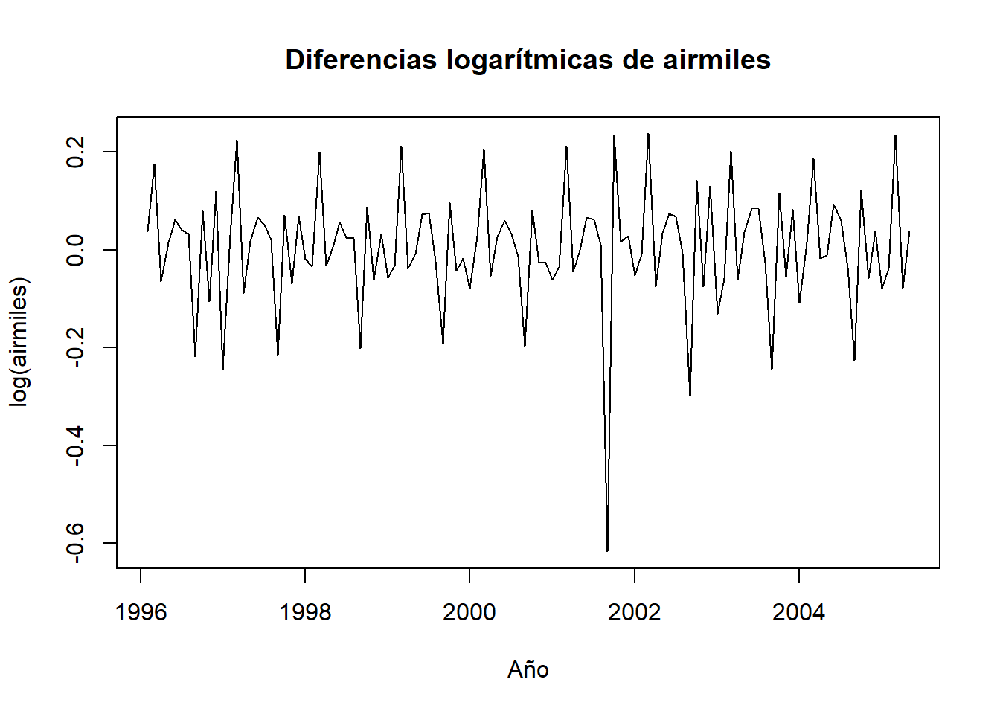

4 Avance 5
4.1 Introduccion
En este avance se realiza un análisis detallado de la serie de tiempo airmiles, que representa el número de millas recorridas por pasajeros aéreos en vuelos comerciales dentro de los Estados Unidos. El objetivo principal es transformar la serie para estabilizar su varianza y volverla estacionaria, condición necesaria para aplicar modelos autorregresivos como ARIMA.
Para ello, se emplean transformaciones logarítmicas y diferenciación. Posteriormente, se evalúa la estacionariedad mediante la prueba de Dickey-Fuller aumentada (ADF) y se ajusta un modelo ARIMA óptimo utilizando auto.arima. Finalmente, se genera un pronóstico a 12 meses y se diagnostica la calidad del modelo mediante el análisis de residuos (normalidad e independencia), asegurando que el modelo sea adecuado para predicción.
Este procedimiento contribuye a reforzar la comprensión y aplicación de técnicas fundamentales para el análisis de series temporales con enfoque predictivo.
4.4 Aplicar logaritmo y diferencias
log_air <- log(airmiles)
diff_log_air <- diff(log_air)
plot(diff_log_air, main = "Diferencias logarítmicas de airmiles", ylab = "log(airmiles)", xlab = "Año")
4.5 Prueba de estacionariedad
## Augmented Dickey-Fuller Test
## alternative: stationary
##
## Type 1: no drift no trend
## lag ADF p.value
## [1,] 0 -14.90 0.01
## [2,] 1 -10.59 0.01
## [3,] 2 -8.64 0.01
## [4,] 3 -6.44 0.01
## [5,] 4 -4.04 0.01
## Type 2: with drift no trend
## lag ADF p.value
## [1,] 0 -14.85 0.01
## [2,] 1 -10.55 0.01
## [3,] 2 -8.63 0.01
## [4,] 3 -6.44 0.01
## [5,] 4 -4.03 0.01
## Type 3: with drift and trend
## lag ADF p.value
## [1,] 0 -14.79 0.0100
## [2,] 1 -10.51 0.0100
## [3,] 2 -8.59 0.0100
## [4,] 3 -6.41 0.0100
## [5,] 4 -4.01 0.0116
## ----
## Note: in fact, p.value = 0.01 means p.value <= 0.014.6 Ajuste del modelo ARIMA
## Series: diff_log_air
## ARIMA(0,0,1)(2,1,0)[12]
##
## Coefficients:
## ma1 sar1 sar2
## -0.4704 -0.4886 -0.2300
## s.e. 0.0945 0.0990 0.0944
##
## sigma^2 = 0.003227: log likelihood = 144.63
## AIC=-281.27 AICc=-280.85 BIC=-270.85
##
## Training set error measures:
## ME RMSE MAE MPE MAPE MASE
## Training set 0.003333275 0.05286522 0.02688532 23.96793 79.9191 0.7100808
## ACF1
## Training set 0.01386424